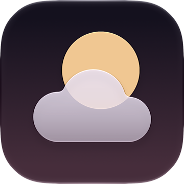
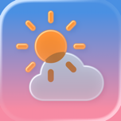

Eesti Ilm · Design Book · “Loojang” · version 1 · 26 November 2026
Eesti Ilm
Design Book
The new look, version 1: the app icon and the color palette. Type, weather symbols, screens, widgets, the App Store and the website come in later versions (see Next).
1Positioning
Our main competitor, ILM+ (the Environment Agency's official app), is one saturated ultramarine with a yellow sun and white line art, like most weather apps. Eesti Ilm takes the opposite side: the warm, calm light of an Estonian evening.
2App icon
A pale sun setting behind a soft cloud, on a plum-to-coral dusk sky (“Loojang”). Two layers, no text. It is built in Icon Composer, so iOS adds the Liquid Glass highlights and shadows.

Construction
| Measure (1024 canvas = 100) | Value |
|---|---|
| Sun | circle, centre (54.8, 38.2), radius 21.1 |
| Cloud | one closed outline: three round bumps (radius 10, 13, 9) with 2.5 valley fillets on a flat bottom, scaled 1.364, 63.8 wide |
| Group bounds | x 18–82, y 17–77, centred left to right, visual weight at (51.6, 51.7) |
| Proportion | cloud width ÷ sun diameter = 1.52 (close to 1.6) |
| Overlap | the cloud covers the lower half of the sun |
| Safe area | all shapes stay inside the central 80% (dashed) |
The cloud must stay one path. Built from overlapping circles, its edge shows seams and a doubled Liquid Glass rim.
Icon Composer settings
| Layer | Default | Dark | Tinted | Glass and effects |
|---|---|---|---|---|
| Background | #3B2C5A → #F29E7A | #15111F → #4A2C3C | set by iOS | linear gradient, top to bottom |
| Group 1 · Cloud (top) | #FFFFFF, opacity 90% | #E8DDEE, opacity 90% | #FFFFFF, opacity 100%, Liquid Glass off | Liquid Glass on, translucency 40%, specular, neutral shadow 50% |
| Group 2 · Sun | #FFD9A0 | #F7C58A | #A6A6A6 | specular, neutral shadow 50%, no translucency |
Why the tinted colors: iOS builds tinted icons from brightness only. A white cloud over a light-grey sun keeps the two shapes apart (cloud 4.5 : 1 to the background, 1.8 : 1 to the sun). With the default colors they merge into one blob.
Do and don't


3Palette · Loojang
The colors and their roles, each with a light and a dark value. Click a color to copy its hex value. How they are applied to screens and widgets is decided in a later version.
Rules
- Use the accent sparingly: selected states, buttons, links. Never for large backgrounds.
- Temperatures below 0° use the cold color, 0° and above the warm color. Always keep the minus sign, so the meaning never depends on color.
- The dusk gradient and the pale sun belong to the icon and the brand, not to UI text.
Contrast (WCAG 2.1, computed)
4Next
Not decided yet; each gets its own iteration before it joins this book.
- Type: text styles for each element, and whether temperatures use the rounded font.
- Weather symbols: SF Symbols style and how the palette colors them.
- Screens: how the palette applies to the forecast list and Settings.
- Widgets: background, layout and colors of the small and medium widgets.
- App Store: screenshots and how the icon appears in the listing.
- Website (eestiilm.app): how the icon and palette carry over to the site.
Files
assets/icon/EestiIlm.icon· the Icon Composer source of the app iconassets/icon/icon-1024.png· flat 1024 exportassets/icon/icon-*.png· renders of each appearance
Renders made with Xcode 27.2 Icon Composer (ictool).